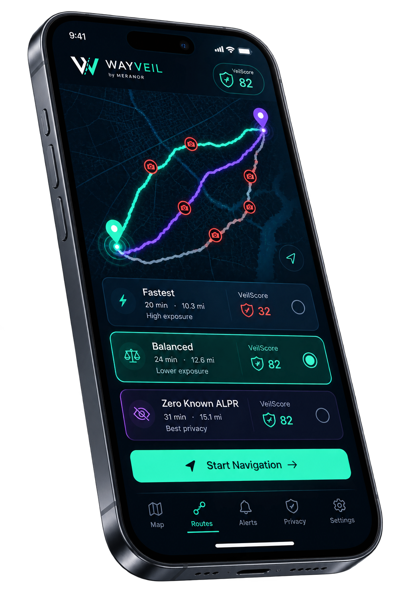

Assistive navigation
WayVeil can help. You drive.
Navigation, known-exposure context, alerts, and route suggestions are decision support. You remain responsible for controlling the vehicle and choosing a safe, legal path.
Safety by priority
WayVeil adds privacy context to navigation. It never replaces your attention, judgment, road signs, or responsibility behind the wheel.
If guidance seems wrong or unsafe, ignore it. Continue driving safely and legally, then pull over before changing settings, searching, or troubleshooting.

Assistive navigation
Navigation, known-exposure context, alerts, and route suggestions are decision support. You remain responsible for controlling the vehicle and choosing a safe, legal path.
Know the limits
Road conditions, signs, GPS quality, construction, closures, and known surveillance data can change or be incomplete. Treat the app as context — not authority.
Safety hierarchy
WayVeil’s driving experience should keep the most urgent information easiest to perceive. Privacy context is useful — but it belongs below the things needed to drive safely.
Traffic control, signs, road conditions, and your own safe judgment always come first.
Turns, route progress, arrival, and rerouting should remain clear, glanceable, and audible.
Useful alerts must not crowd out or compete with the next maneuver or safe operation of the vehicle.
Known ALPR exposure can inform route choice. It never justifies a sudden, illegal, or unsafe maneuver.
Alerts with purpose
Whether you’re driving alone or carrying the people who matter most, WayVeil is designed to surface useful context without demanding your attention.
Privacy awareness
When supported route data shows known ALPR exposure ahead, WayVeil can surface a clear, glanceable warning so you know what’s coming.
Route guidance
When your route changes or rerouting is needed, the next driving action stays prominent instead of getting buried under secondary information.
Community context
Where supported, nearby community reports can add useful context about hazards, police activity, cameras, or changing road conditions.
Eyes up
Audible turn guidance and important cues reduce the need to stare at the screen, helping the app stay useful without becoming another distraction.
Available data and road conditions can change quickly. Always follow signs, laws, real-world conditions, and what you can actually see.
Before and during the drive
Alpha testing is useful only when feedback never competes with driving attention.
Before moving
Mount the device, choose your destination and route, confirm location access, and make sure audible guidance is ready before you roll.
While moving
Do not type, run searches, dig through settings, complete long forms, take evidence photos, or troubleshoot while driving.
Quick Report
If the current build offers a bounded Quick Report action, keep it to that supported low-interaction flow. Add text, photos, or details only after parking.
Solo Alpha driving
Use audible guidance so the screen does not have to carry the whole navigation task. If voice is unavailable, park before reconfiguring it.
If guidance degrades
If position, route, or guidance becomes unreliable, keep driving safely and legally. Pull over before diagnosing, changing the route, or recovering the app.
Alpha access
Expiry, revocation, suspension, updates, recovery, or reauthorization must not become a reason to interrupt an active drive. Handle them safely after stopping.
Miss a turn. Take the camera encounter. Follow the road. Privacy optimization can wait; safety cannot.
Alpha limitations
Clear limits make a better Alpha. WayVeil should surface uncertainty rather than pretending the app knows more than it does.
Unknown, newly installed, moved, inactive, or missing surveillance devices can exist. “0 known ALPR” never means camera-free or surveillance-free travel.
GPS can drift, lag, or become coarse. WayVeil should avoid escalating weak location evidence into confident rerouting or unsafe instructions.
Temporary closures, construction, signs, access restrictions, and other real-world conditions may differ from the data available to the app.
Active-guidance safety
Access controls can govern future sessions, installs, or reauthorization. They must not abruptly terminate active local guidance because a lease expires, access is revoked, or a service becomes unavailable during a drive.
Test responsibly
Closed-Alpha testing starts small so navigation quality, privacy behavior, and safety evidence can improve together.